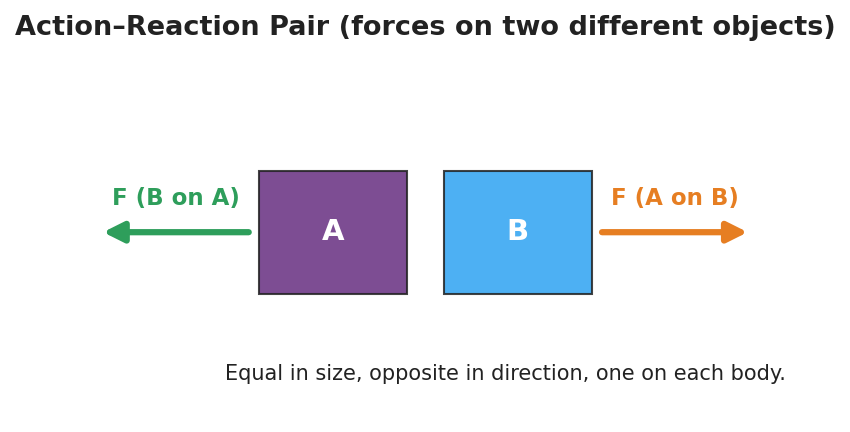

Unit: Forces — Lesson 03: Newton's Third Law (Action and Reaction)
Phenomenon
Two students sit facing each other in rolling chairs, the soles of their shoes touching. On a count, only one of them pushes. Yet both students roll apart — and the lighter one rolls away faster.
Only one person pushed. How did both end up moving?
Driving Question
If only one person pushed, why did both people move?
Notice & Wonder
Watch the push-off. Write two things you notice and two things you wonder. Use the word force in at least one line.
Initial Model
Draw the two students at the moment of the push. Draw an arrow for every push acting in the system, and label which object each arrow acts on. Then predict how the two pushes compare in size.
Investigate
Object A pushes Object B. Click Push! and watch what happens. Newton's Third Law says the force A exerts on B is always equal in size and opposite in direction to the force B exerts back on A. The two arrows are always the same length, pointing opposite ways — and they act on two different objects, so they never cancel. Change the push strength and watch both arrows update together.
Force A → B: 0 N (right) · Force B → A: 0 N (left) · Equal and opposite, on two different objects.
The action–reaction pair: equal-length arrows, opposite directions, on two different bodies — which is exactly why they don't cancel.

Make It Make Sense
- You walk forward across the floor. Name the action–reaction pair and state which object each force acts on.
- A rocket has no air to push against in space. How does it still speed up? Name the force pair.
- A small student and a large student push off in rolling chairs. The forces on each other are equal — so why does the smaller student roll away faster?
Stuck? Sentence frame
"___ pushes ___, so ___ pushes ___ back, equal and opposite — and because they act on different objects, they ___."
Key Vocabulary (max 3)
- action–reaction pair — the two forces produced by one interaction; equal in magnitude and opposite in direction, acting on two different objects
- force pair — another name for an action–reaction pair; the two forces are always reported together
- interaction — the mutual push or pull between two objects; a force is one half of an interaction, never something a single object has alone
Revise Your Model
Return to your push-off drawing. Make sure you have two arrows, equal in length, pointing opposite ways, each labeled with the object it acts on. In one sentence, explain why they do not cancel.
Return to the Phenomenon
Why did the lighter student roll faster if the two forces were equal? Answer in one sentence: the forces are equal, but equal force on less mass gives more acceleration (a = F/m), so the lighter student speeds up more.
Exit Ticket + Closing Reflection
- A swimmer pushes off the pool wall and glides forward.
(a) Name the action–reaction pair. State which object each force acts on. (b) The two forces are equal and opposite — so why doesn't the swimmer stay still? (c) True or false: action and reaction forces cancel each other out. Explain. - Reflection: What is one idea today that pushed back on what you used to think? Who helped you make sense of it?